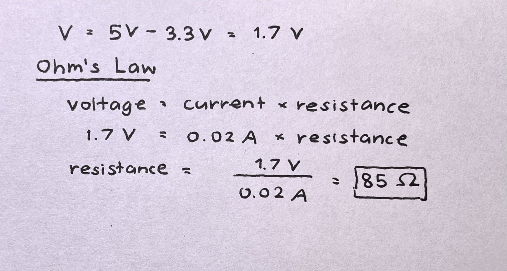

A3: Input Output!
Measuring light levels with a photoresistor

Measuring light levels with a photoresistor
This schematic shows 3 LEDs and a voltage divider (composed of a photoresistor and a 10K Ω resistor in series) lined up in a parallel circuit. The Arduino is powered by a 5V USB cord where 3 different PWM pins are used to individually connect to the LEDs, plus 1 analog input pin connecting between the photoresistor and the 10K Ω resistor. For the LEDs and the photoresistor, resistors with specific values were calculated and selected (see "Calculating Resistors" below). All the resistors/LEDs were then connected to ground.
Following the schematic outlined above, I built the circuit using the following components:
1 Arduino Uno R3
1 breadboard
1 USB cable and power source (laptop)
6 wires (1 for ground; 3 for LEDs; 2 for photoresistor)
3 LEDs (1 blue; 1 green, 1 white)
1 photoresistor
4 resistors (1 of 220Ω; 2 of 100Ω; 1 of 10kΩ)

For the GREEN LED, — knowing that it has a 1.8 voltage drop and that the USB provides 5V, I calculated the voltage across the resistor as follows:
Because the class kit provided does not include 160 Ω resistors, I opted for a higher value of 220 Ω which resulted in a lesser current.
Using similar calculation for the BLUE and WHITE LEDs that have a 3.3 voltage drop, the voltage across the resistor would be
Again, because the kit does not include 85 Ω resistors, I used 100 Ω resistors instead.
For the PHOTORESISTOR, I measured the varying resistances of my photoresistor under various light conditions I have determined for each brightness level (Dark, Bright, Very Bright, and Too Bright) and used the voltage divider formula to calculate the value of my fixed resistor. Because I wanted the output voltage to be 2.5V when the brightness is "BRIGHT" and I measured that the photoresistor had about 10K Ω under that light condition, I decided to use a 10K Ω fixed resistor. Also, the 10k Ω resistor has been used as a standard value to save power and would serve as a safety net when the photoresistor's resistance gets really close to 0 Ω (under really bright light). Additionally, I was curious to see how the voltage was changing under each light condition, so I did some calculations below.

/* This program measures light detected by a photoresistor and indicates
each light level by turning on/off specific LEDs with special messages*/
// Blue LED pin #
const int B = 3;
// Green LED pin #
const int G = 5;
// White LED pin #
const int W = 6;
// set sensor value to 0
int sensorValue = 0;
// set LED value to 0
int outputValue = 0;
// array of all LEDs
int leds[] = {B,G,W};
// initialize Blue, Green, and White LEDs as outputs
void setup() {
// select each LED
for (int i=0; i<3; i++) {
// set Blue, Green, and White LEDs as outputs
pinMode(leds[i], OUTPUT);
}
// starts serial communication
Serial.begin(9600);
}
/*on-going light detection to turn on/off specific LEDs
depending on the brightness (dark, bright, very bright, and too bright)
NOTE: value ranges for each light level were arbitrarily chosen
based on the room environment I was in */
void loop() {
// read values from photoresistor
sensorValue = analogRead(A0);
// convert values from sensor (0-1023) into values for LEDs (0-255)
outputValue = map(sensorValue, 0, 1023, 0, 255);
// check if LED value converted is less than or equal to 80 (dark)
if (outputValue <= 80) {
// set Blue LED to a specific brightness value
analogWrite(B, outputValue);
// turn Green LED off
digitalWrite(G, LOW);
// turn White LED off
digitalWrite(W, LOW);
// wait 5 seconds to stabilize
delay(5);
// print message to Serial board
Serial.println("It's dark!");
// check if LED value converted is between 81 and 160 (bright)
} else if ((outputValue >= 81) and (outputValue <= 160)) {
// set Green LED to a specific brightness value
analogWrite(G, outputValue);
// turn Blue LED off
digitalWrite(B, LOW);
// turn White LED off
digitalWrite(W, LOW);
// wait 5 seconds to stabilize
delay(5);
// print message to Serial board
Serial.println("It's light!");
// check if LED value converted is between 161 and 240 (very bright)
} else if ((outputValue >= 161) and (outputValue <= 240)) {
// set White LED to a specific brightness value
analogWrite(W, outputValue);
// turn Blue LED off
digitalWrite(B, LOW);
// turn Green LED off
digitalWrite(G, LOW);
// wait 5 seconds to stabilize
delay(5);
// print message to Serial board
Serial.println("It's super bright!");
// check if LED value converted is more than 241 (too bright)
} else {
// select each LED
for (int i=0; i<3; i++) {
// turn LEDs on
digitalWrite(leds[i], HIGH);
}
//wait 100 milliseconds for flicker
delay(100);
// select each LED
for (int i=0; i<3; i++) {
// turn LEDs off
digitalWrite(leds[i], LOW);
}
//wait 100 milliseconds for flicker
delay(100);
// print message to Serial board
Serial.println("It's way too bright!!");
}
}